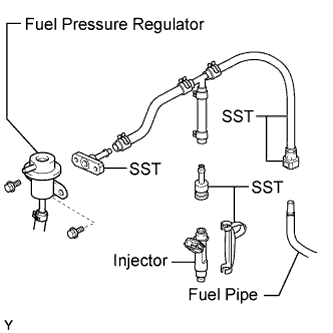
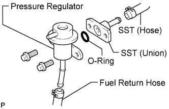
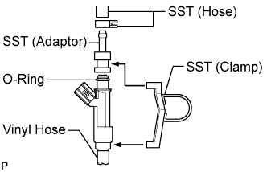
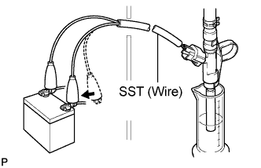

FUEL INJECTOR > INSPECTION |
| 1. INSPECT INJECTION VOLUME AND LEAKAGE |
Check the injector injection.
 |
Assemble SST as shown in the illustration.
Discharge the fuel system pressure (Click here).
Disconnect the fuel inlet hose (fuel tube connector) from the fuel pipe.
Remove the bolt and disconnect the fuel pressure regulator from the fuel delivery pipe.
 |
Connect SST to the fuel pipe.
 |
Connect SST (hose) to the fuel inlet of the pressure regulator with another SST (union), a new O-ring and the 2 bolts.
Connect the fuel return hose to the fuel outlet of the pressure regulator.
 |
Install the O-ring to the injector.
Connect SST (adaptor and hose) to the injector, and hold the injector and union with another SST (clamp).
Put the injector into a graduated cylinder.
Connect the intelligent tester to the DLC3.
Operate the fuel pump (Click here).
 |
Connect SST (wire) to the injector and battery for 15 seconds, and measure the injection volume with the graduated cylinder. Test each injector 2 or 3 times.
Check for fuel drop.
 |
In the condition above, disconnect the tester probes of SST (wire) from the battery and check for fuel drop from the injector.
Turn the engine switch off.
Disconnect the cable from the negative (-) battery terminal.
Remove SST and fuel tube connector.
Disconnect the intelligent tester from the DLC3.
Reconnect the fuel inlet pipe to the fuel tube.